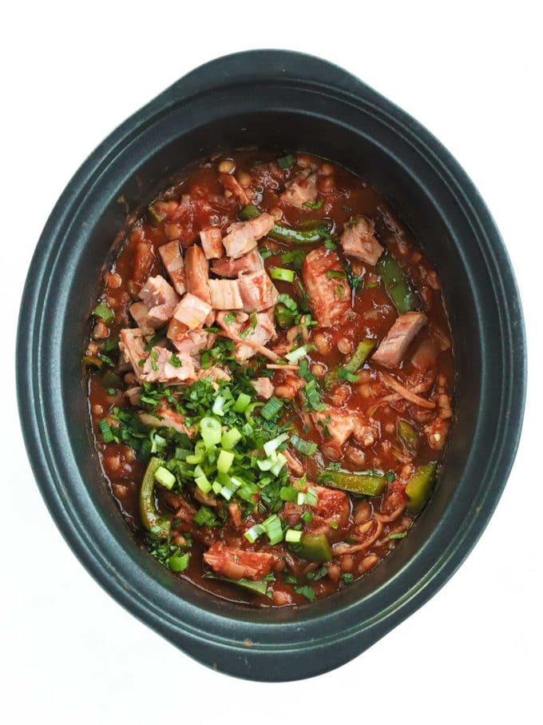

This Campfire Stew recipe is a really easy way to cook
gammon in the slow cooker. Packed with veggies and beans,
it makes a tasty meal.
Reagents:
- 1 Large Onion
- 3 Garlic Cloves
- 400g Chopped Tomatoes
- 2 Cans Baked beans
- 2 tbsp Tomato puree
- 2 tsp Cumin
- 4 tsp Smoked Paprika
- 1/2 tsp Chilli powder
- 3 tbsp Worcestershire sauce
- 600g Gammon joint
- 2 Green peppers
Steps:
- Put all of the ingredients (apart from the peppers SEE NOTE 4 below) into the slow cooker.
- Cook on HIGH for 6 hours or LOW for 8 hours.
- When the stew is cooked, microwave the chopped green peppers for about 3 - 4 minutes until just softened.
- When the meat joint is cooked and tender, shred the meat with a knife or two forks and add in the green peppers.
- Stir everything well and serve.
Notes:
Note 1 - Onions and Garlic
I use pre prepared frozen, chopped here. An onion weighs about 150g, so replace with that pre chopped weight. Garlic is about 5g per clove so I use 15g (3 teaspoons).
Note 2 - Sweet Smoked Paprika
Be sure to use SWEET Smoked, not HOT. The outcome will be very different if you mix them up!
Note 3 - Gammon Joint
Slightly bigger is fine if you can't get the exact size. Smoked or unsmoked to your taste is also fine.
Note 4 - Green Peppers
I hate overcooked bell peppers, but you have 3 options here for adding the peppers:
- Add them with all of the other ingredients before cooking, if you don't mind them very soft, no probs!
- Add them to the slow cooker about an hour before the stew is due to be cooked, they will be just nicely soft - BUT this isn't always possible if you're not at home right?
- Here's what I do: When the stew is ready, I pop the chopped peppers into a covered bowl and microwave them for 4 minutes before adding to the stew before serving (you could also quickly fry them if you don't have a microwave).
Return to top
Main Page